Tianjin TEDA Factory
- Factory area
- 65,000 m²
- Annual capacity
- 45,000
OTS · GLOBAL PROJECT DELIVERY
From global R&D and manufacturing in China to international logistics,
installation, commissioning and lifecycle service for complex building projects.
01 / GLOBAL CAPABILITY
Scale is not just a number. It is confidence behind every project.
SUPPORTED BY OTS GLOBAL R&D NETWORK
International projects draw on product-development, system-engineering and application expertise, connecting local market requirements with shared technical standards.
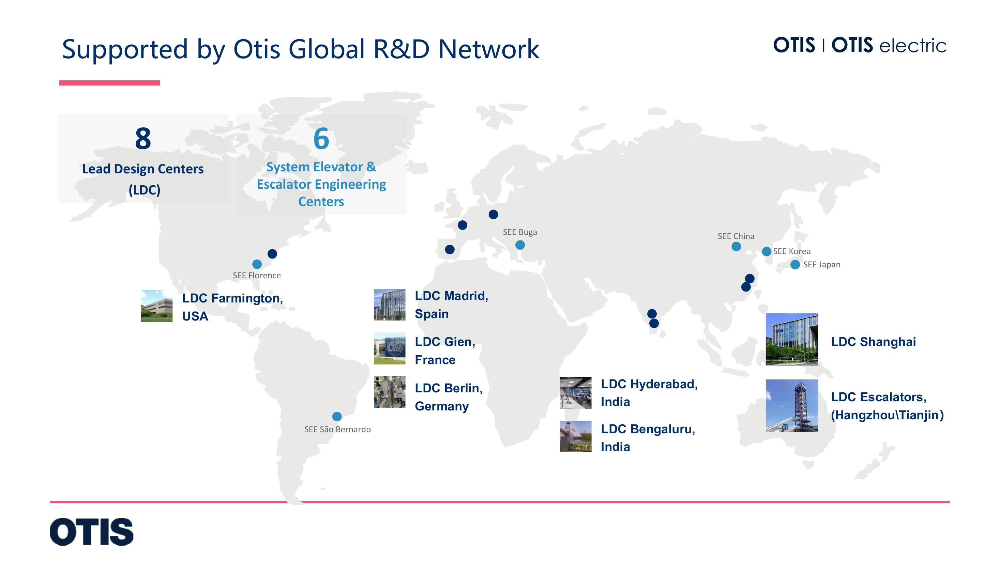
MADE IN CHINA · DELIVERED GLOBALLY
Four manufacturing and logistics bases connect scalable production, digital quality management and international project delivery.
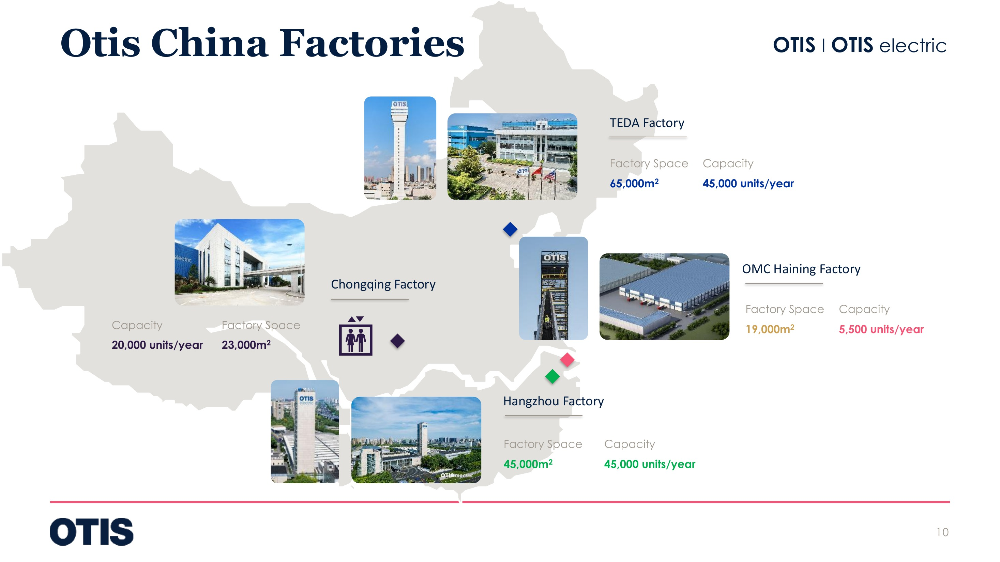
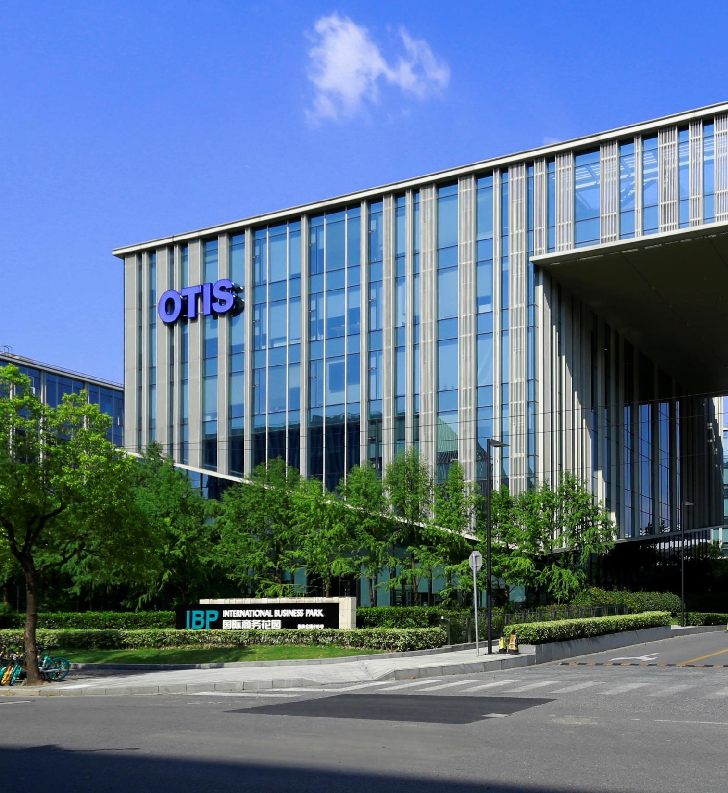
SUPPORTED BY OTS GLOBAL R&D NETWORK
The Shanghai Lead Design Center brings together product development, systems engineering and application support, working with a global R&D network to adapt solutions for different markets, building types and technical codes.
8 Lead Design Centers
6 System Engineering Centers
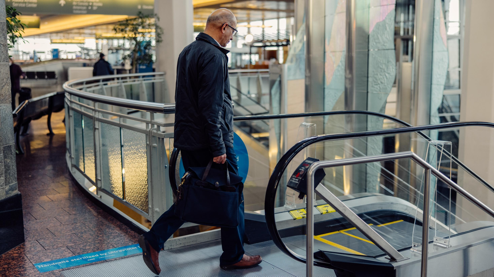
FIELD OPERATIONS
Standardized field controls make safety, quality and programme performance visible at every milestone.
Experienced project management and qualified installation professionals.
Eight-step control across critical delivery milestones.
End-to-end inspections from mobilization through handover.
Site safety embedded as the prerequisite for every activity.
GLOBAL PROJECT REFERENCES
Project categories and equipment quantities are compiled from international project materials.
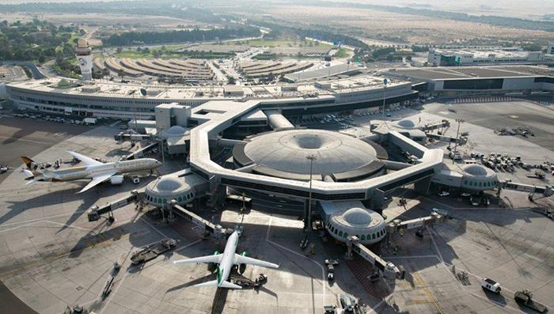
292 unitsInternational Airports
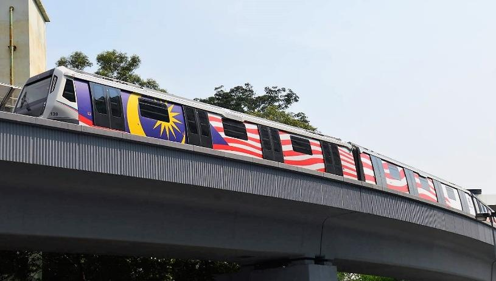
453 unitsMetro & Rail
Public Buildings
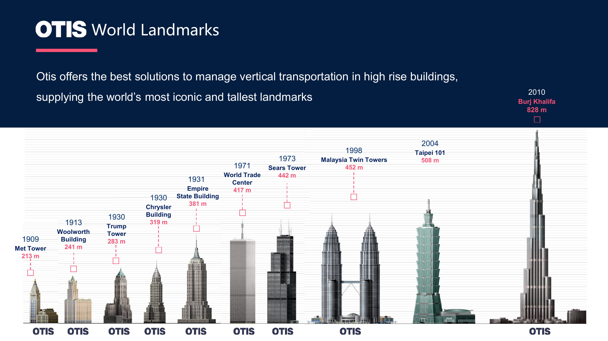
Proven delivery for major hubs, new terminals and complex passenger environments.
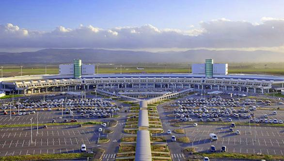
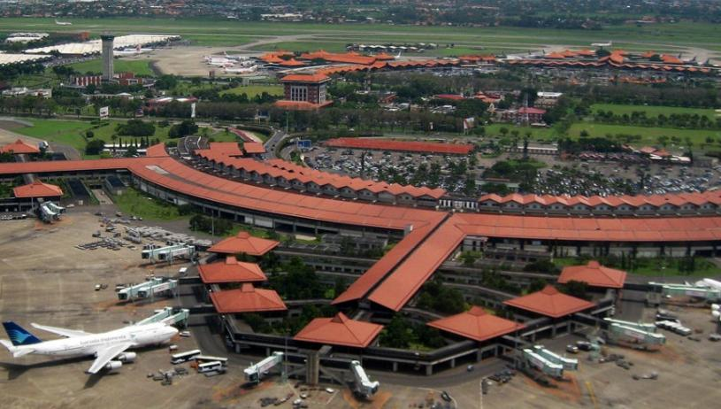
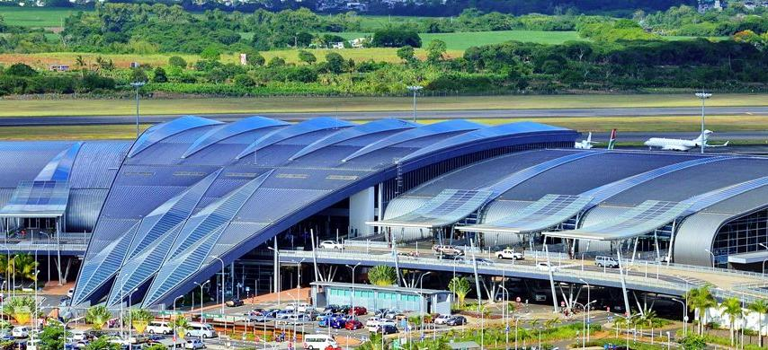
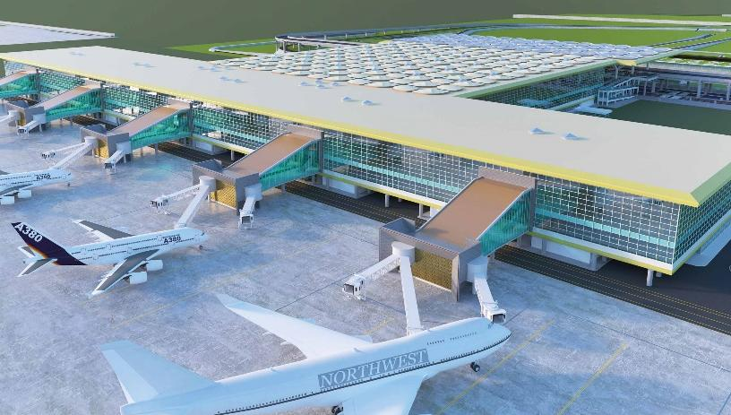
Reliable vertical transportation under peak traffic, continuous operation and multi-system coordination.
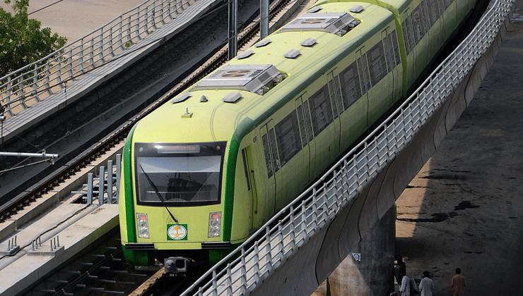
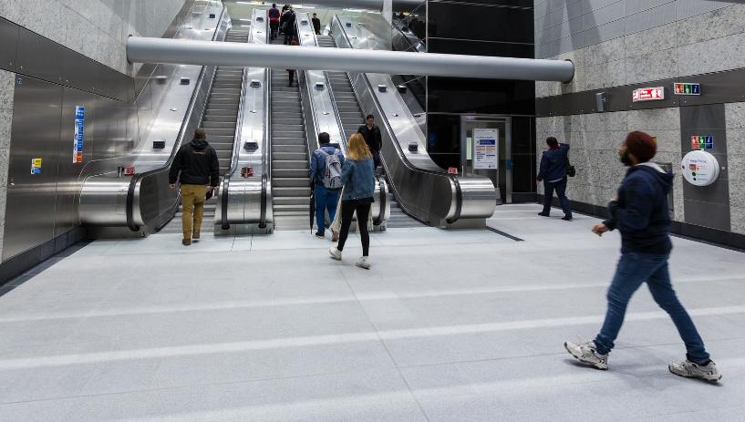
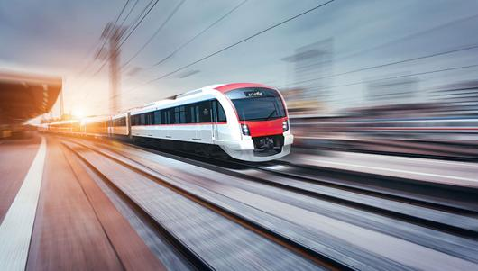
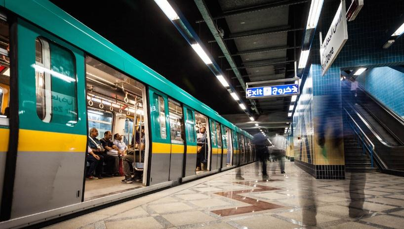
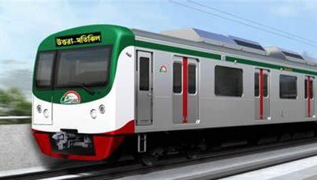
Experience spanning stadiums, hospitals, major retail destinations and civic landmarks.
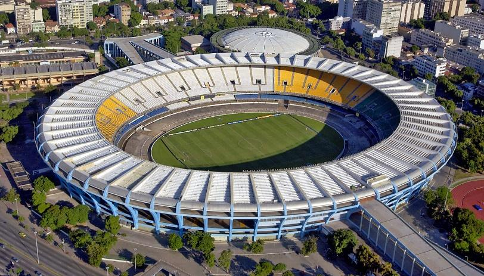
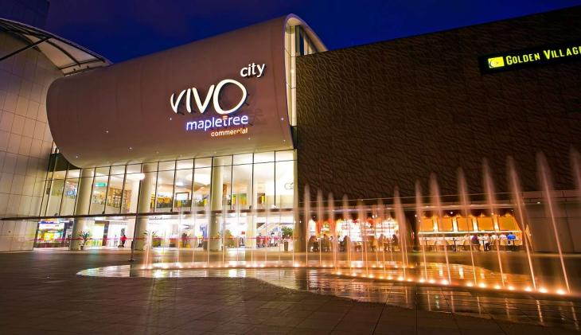
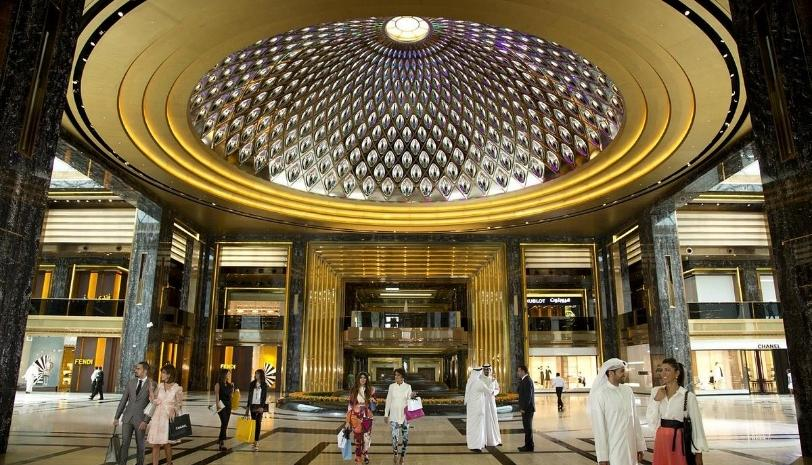
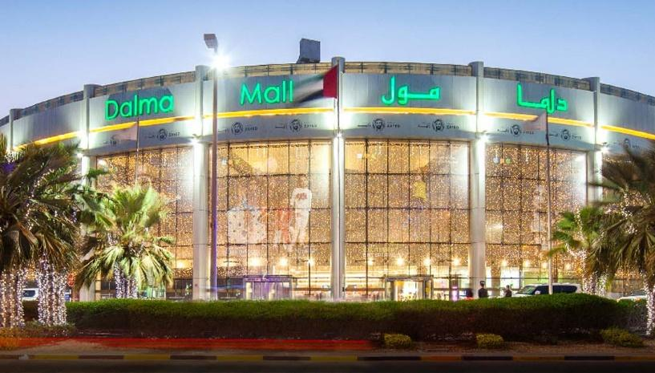
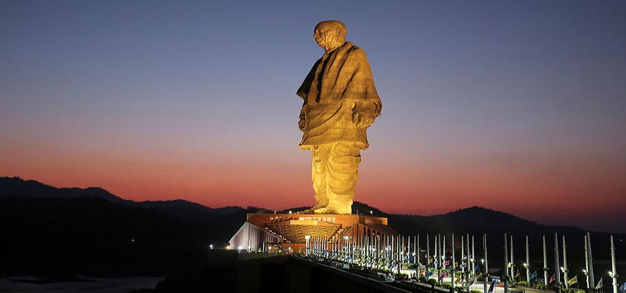
SELECTED DELIVERY
For overseas projects delivered by Chinese contractors, developers or government-aid programmes, OTS can coordinate bidding, procurement and supply from China.
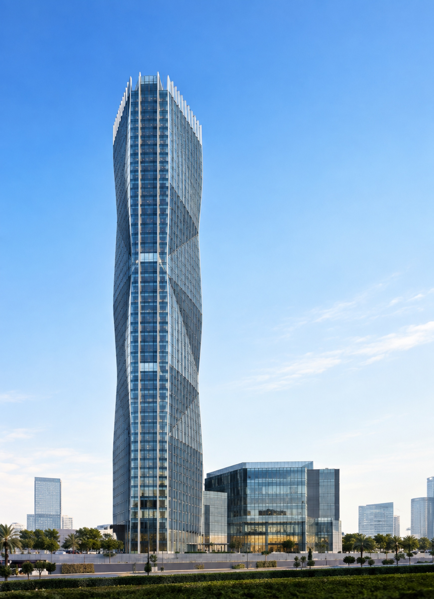
ETHIOPIA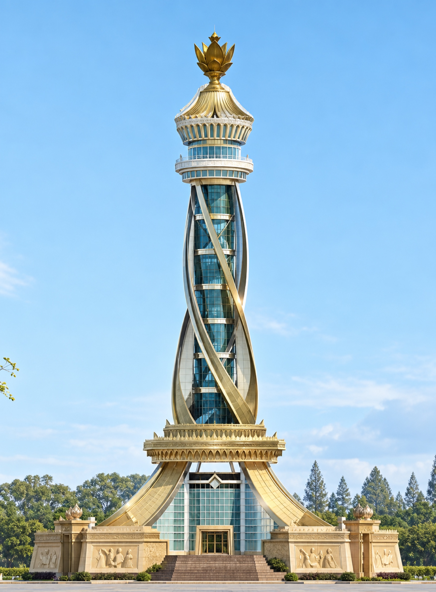
TAJIKISTANWHAT WE DELIVER
Project coordination connects manufacturing, logistics, installation, commissioning and lifecycle service according to the agreed Incoterms and destination market.
RESPONSIBLE TEAM / TERMSProject Team
Vertical-transportation planning, product configuration and interface coordination based on building use and traffic demand.
RESPONSIBLE TEAM / TERMSChina Manufacturing
Production, inspection, packing and factory-release activities aligned to the project schedule.
RESPONSIBLE TEAM / TERMSFOB / EXW
Clearly defined delivery points, logistics responsibility and documentation handover.
RESPONSIBLE TEAM / TERMSLocal & China Teams
Installation, commissioning and lifecycle-service coordination for the destination market.
BEFORE YOUR PROJECT STARTS
These answers establish the essential project inputs before a project-specific solution is confirmed.
For standard configurations, typical manufacturing lead time is approximately 1–2 months, subject to final technical approval and logistics.
Architectural drawings, hoistway dimensions, floors, stops, overhead and pit dimensions, power supply information and construction programme.
The executable scope is confirmed by the contracted scope, site readiness and qualified resources available in the destination market.
START A PROJECT
Share the project location, building type and initial requirements. The project team will follow up to confirm elevator selection, supply, installation and service arrangements.
START A PROJECT WITH OTS